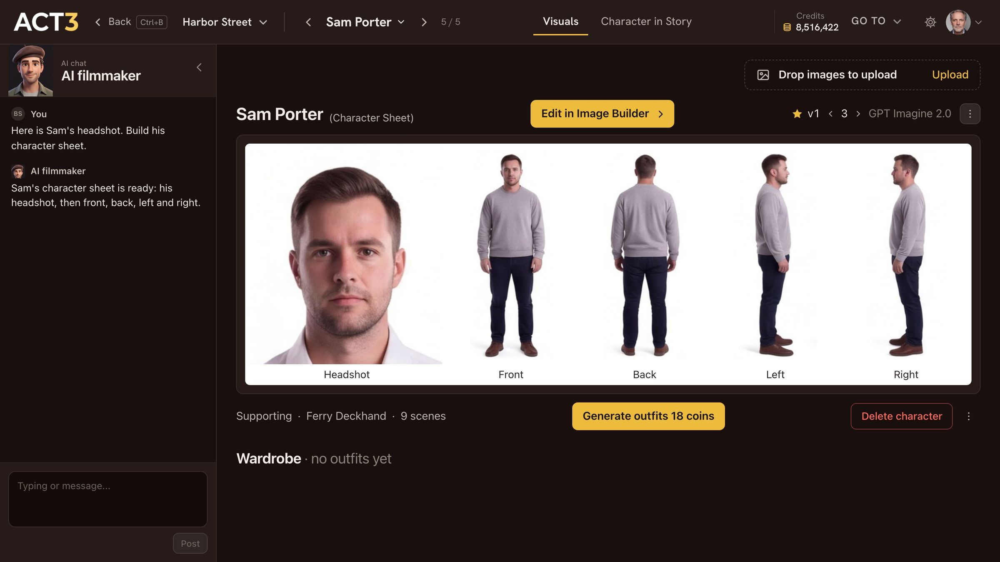

Step 7 of 8
Open it in the Image Builder
To change the look, click Edit in Image Builder above the sheet. The Image Builder opens on this character. The sheet and its prompt load with it.

Edit in Image Builder › opens the Image Builder on this character's sheet.
What the Image Builder is
The Image Builder is where ACT 3 AI makes and remakes pictures: first frames, sets and, here, a character sheet. It opens on this character, with Save to: character showing the character's name in the top bar. Three columns:
- AI chat on the left. Tell the AI filmmaker what to change in plain words.
- The prompt in the middle: the full description the image model works from. The AI rewrites it from your chat, or you edit it directly.
- Input images and results on the right: the images the model must follow (the current sheet is ticked, so the face stays), Build Character Sheet, and the new results under it.
Two more ways in: double-click the sheet on the character's page, or open its ⋮ menu and choose Modify in Image Builder.
Why you go next to the change
Everything about the look is here in one place. Step 8 makes one change, a new hairstyle, and keeps it.